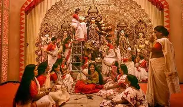

JAGADHATRI PUJA

Here are 5 important points about Jagadhatri Puja:
- Jagadhatri Puja celebrates Goddess Jagadhatri, a form of Durga, symbolizing power, compassion, and protection.
- It is mainly celebrated in West Bengal, especially in Chandannagar and Krishnanagar.
- Beautifully decorated idols and grand processions are special attractions of Jagadhatri Puja.
- Devotees offer prayers, flowers, and sweets, seeking peace, strength, and prosperity.
- The festival ends with immersion of idols, spreading devotion, harmony, and happiness.